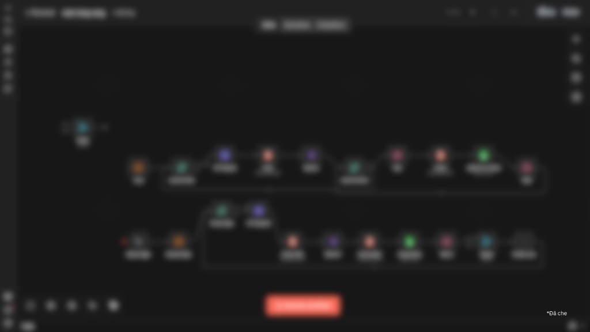
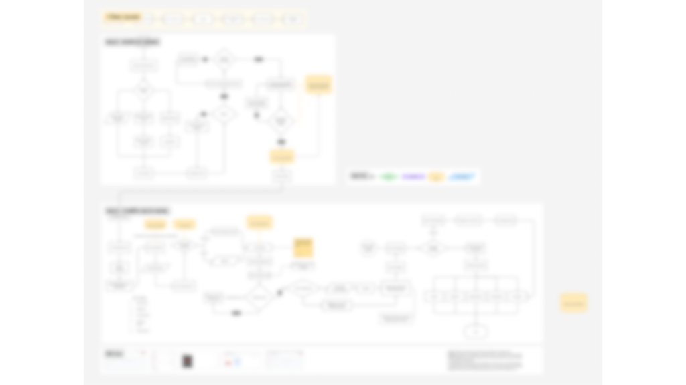
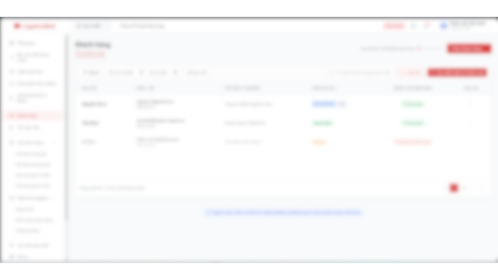

Professional Summary
Business Analyst với kinh nghiệm trong lĩnh vực logistics và tối ưu hóa quy trình nghiệp vụ. Có khả năng phân tích workflow vận hành, xác định các bước lặp lại và đề xuất giải pháp automation để nâng cao hiệu suất làm việc. Thành thạo sử dụng các công cụ AI để nghiên cứu thị trường, phân tích dữ liệu, xây dựng prototype và chuyển đổi yêu cầu nghiệp vụ thành tài liệu Technical Specification rõ ràng.
Professional Experience
- Trong quá trình làm việc và quan sát workflow thực tế, nhận thấy nhiều bước thao tác lặp lại và các điểm nghẽn trong quy trình xử lý chứng từ. Từ các vấn đề này, chủ động phân tích quy trình và xây dựng công cụ hỗ trợ nhằm tối ưu hóa công việc cá nhân.
- Tham gia xử lý chứng từ và khai báo cho các lô hàng xuất nhập khẩu, bao gồm các loại tờ khai liên quan đến văn hóa và an ninh. Yêu cầu độ chính xác cao trong việc kiểm tra dữ liệu, chuẩn bị hồ sơ và đảm bảo tuân thủ các quy định vận hành.
- Kiểm tra tính hợp lệ của chứng từ và dữ liệu trước khi nộp.
- Phối hợp với các bộ phận vận hành để đảm bảo tiến độ xử lý lô hàng.
- Tham gia tối ưu quy trình xử lý chứng từ.
Phân tích workflow xử lý chứng từ và xác định các tác vụ lặp lại có thể tối ưu hóa.
Approach: Phân tích nghiệp vụ; Xác định tác vụ lặp lại; Xây dựng công cụ bằng AI-assisted development để tự động hóa quy trình.
Impact: Giảm thời gian xử lý từ 8 giờ/ngày xuống còn ~2 giờ/ngày.Key Projects
Project 1: Market Research & Lead Discovery Automation
Lưu ý: dự án ngoài công việc chính.
Business Value: Hỗ trợ đội sales tiếp cận dữ liệu thị trường nhanh hơn và cải thiện quá trình tìm kiếm khách hàng tiềm năng.
Xây dựng workflow automation bằng n8n để:
- Thu thập dữ liệu từ các website.
- Phân tích đối thủ và nghiên cứu thị trường.
- Hỗ trợ tìm kiếm khách hàng tiềm năng cho đội ngũ sales.
- Xây dựng workflow hỗ trợ hoạt động bán hàng hiệu quả và suôn sẻ hơn.

Project 2: Email Automation Workflow
Đóng vai trò kết nối giữa đội ngũ Sales và IT để giải quyết bài toán email automation: thu thập yêu cầu, phân tích workflow, làm việc với IT để đề xuất giải pháp và xây dựng quy trình gửi email hiệu quả.

